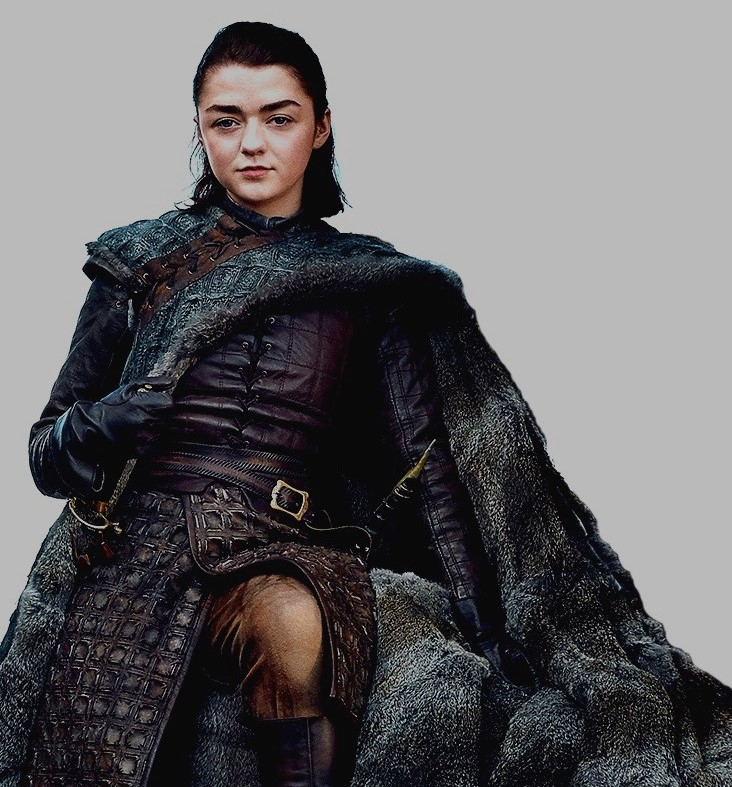

About Arya Stark
Arya Stark is the youngest daughter and third child of Lady Catelyn and Lord Ned Stark. Arya was born and raised at Winterfell. She has an older sister, Sansa, an older brother Robb, two younger brothers Bran and Rickon Stark, and a "bastard half-brother" Jon Snow. Arya rejects the notion that she must become a lady and marry for influence and power. Instead, she believes that she can forge her own destiny. She is fascinated by warfare and training in the use of arms, and is bored by embroidery and other "lady-like" pursuits. She takes after her father and has a quarrelsome relationship with her sister Sansa, due to their contrasting interests and personalities. She is close to her "half-brother" Jon, who is also something of an outsider.
Arya Stark of Winterfell
Arya's Personality
- Fiercely.
- Tomboy.
- Vengeance against her enemies(for killing her parents).
- Has a kill list to fulfill her revenge
- Speaks for her family no matter what (obviously like her mother).
Kill list
Arya's list logically only contains those whom she knows have committed crimes against her or her family. For a while, Arya added the Melisandre, Beric Dondarrion, and Thoros of Myr to her list, because she was upset the Brotherhood Without Banners let Melisandre take Gendry away and postponed taking her to her family in Riverrun. Ilyn Payne, the executioner who beheaded her father, was also phased out of her list, maybe because he was a hired hand simply following orders like the Hound.